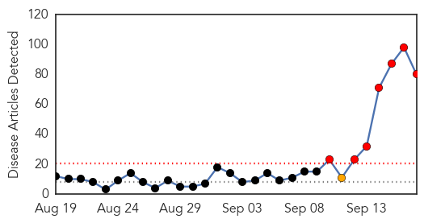
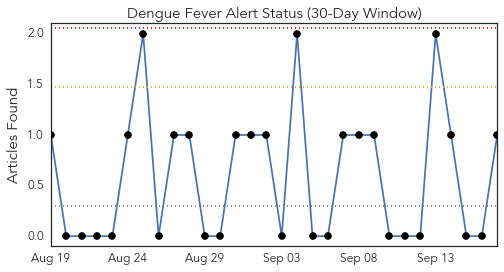
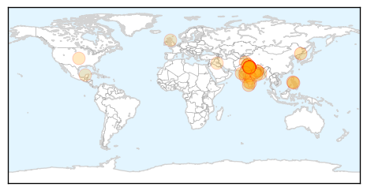
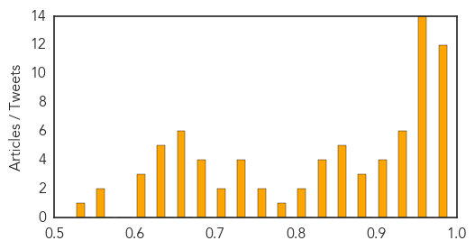

Ebola
30-Day Web Trend
0 alerts, 0 warnings

30-Day Twitter Trend
0 alerts, 0 warnings

Article Locations

Article Confidences

Top Articles:
- 0.998
- Report Highlights Lessons Learned from Texas Hospital during Ebola Crisis
- 0.998
- Rapid response to new Ebola infection in Bombali, Sierra Leone
- 0.996
- National Emergency Operations Centers Support Long-Term Public Health Infrastructure in West Africa
- 0.993
- The aftermath of Ebola sparks a rethink about aid
- 0.984
- AIDS on steroids: comparing the spread of Ebola and AIDS in Africa
- 0.979
- Dying to Live by Samuel Kargbo
- 0.974
- Nigeria Confirms 2 New Ebola Cases
- 0.968
- New Sierra Leone Ebola Cases Frustrate Efforts to End Outbreak, Articles
- 0.968
- American Cameraman has Ebola After Working in Liberia for NBC News
- 0.937
- Georgia's response to Ebola strengthened its hospital system, health officials say
- 0.911
- State Dept. Issues Sierra Leone Travel Warning, Sept. 17, 2015
- 0.867
- Power of prayer heals Ebola in Liberia
- 0.810
- Tens of Thousands of Births Remain Unregistered
- 0.793
- Getting Liberian children back into school as nation is declared Ebola-free
- 0.652
- UBA Supports Movie on War against Ebola, Articles
Top Tweets:
- 0.983
- RAPIDE ran clinical trials for two potential treatments for Ebola virus disease: brincidofovir (Liberia) and TKM-130803 (Sierra Leone).
- 0.982
- Guinea reports Ebola-free week, but Sierra Leone has 5 cases - CIDRAP http://t.co/oUDmzx4HKe ebola EVD
- 0.897
- Sacra: Ebola Vaccine May Be Game Changer - Christian Broadcasting Network http://t.co/Mx3aWORq7Q ebola EVD
- 0.894
- Ebola vaccines face daunting path to approval - Science /AAAS http://t.co/pBfpieinj0 ebola EVD
- 0.871
- Georgia tracked 1400 people exposed to Ebola - Savannah Morning News http://t.co/CW7lwtFRWv ebola EVD
- 0.868
- Confusion and Fear of Ebola Delayed Treatment for Some Kids - Live Science http://t.co/kAeFSlPZYR ebola EVD
- 0.821
- Experimental Ebola drug ZMapp gets fast track status from FDA - CNN http://t.co/hW88AjiBxE ebola EVD
- 0.811
- UBA Supports Movie on War against Ebola - THISDAY Live http://t.co/WlEZrMKwE8 ebola EVD
- 0.754
- Global Ebola Partnering 2010-2015 - PR Newswire (press release) http://t.co/ev4MwJcOTM ebola EVD
- 0.723
- Ebola survivor to speak at Mars Hill fundraiser - Times Daily http://t.co/WSJUCX2y1z ebola EVD
- 0.637
- 17 Sept - news pouch on avianflu avianinfluenza Ebola EbolaResponse MERS is here: http://t.co/jPX9Nju1k2
- 0.594
- RT: Eurosurv: From SARS to Ebola – 10 years of disease prevention and control at ECDC https://t.co/hWi2eyPbvZ h/t tetano
- 0.586
- Musicians' Union to Honor Artists Today for Songs Against Ebola - Liberian Daily Observer http://t.co/9uF2ra3ZPs ebola EVD
- 0.554
- FDA Fast-Tracks Experimental Ebola Drug ZMapp - http://t.co/FMQyohd10H http://t.co/vvry7xjlgz ebola EVD
- 0.554
- FDA Fast-Tracks Experimental Ebola Drug ZMapp - http://t.co/FMQyohd10H http://t.co/jSd1dKxw89 ebola EVD
- 0.524
- Aid agencies urged to sustain Ebola data advances - http://t.co/oXbQeldPQA http://t.co/jtyT9DuSrv ebola EVD
- 0.510
- UBA Supports Movie on War Against Ebola - http://t.co/NaiI6Jl8yj http://t.co/a1oBMAjQrN ebola EVD
Dengue Fever
30-Day Web Trend
7 alerts, 1 warnings

30-Day Twitter Trend
0 alerts, 0 warnings

Article Locations
Article Confidences
Top Articles:
- 0.994
- India: High Court seeks report from Centre, Delhi government on dengue
- 0.994
- India: High Court seeks report from Centre, Delhi government on dengue
- 0.983
- Delhi Hospitals Struggle to Meet Demand for Beds
- 0.982
- Dengue cases: Delhi hospitals struggle to meet demand for beds
- 0.982
- Mounting cases of dengue trigger bed crunch in government hospitals in Delhi
- 0.981
- Dengue outbreak: Delhi corporations caught on wrong foot over data
- 0.979
- Philippines: Juan Ponce Enrile hospitalized with dengue fever
- 0.977
- 13 fresh cases reported in Noida
- 0.977
- Delhi govt caps dengue test rates at private hospitals
- 0.977
- All four strains circulating in country
- 0.977
- India Grapples with Dengue Fever Outbreak - India
- 0.976
- Dengue menace in Delhi: Toll touches 14, hospitals to take in more doctors : Delhi, News
- 0.973
- Delhi hospitals warned not to turn away dengue patients
- 0.973
- Dengue claims first victim in Haryana
- 0.972
- Dengue scare: Hospital face space crunch; doctors overloaded
- 0.971
- Is goat milk effective in treating dengue? Delhi doctors debunk some myths
- 0.971
- Why desi treatments cannot be blindly trusted
- 0.967
- Laxity by health, local bodies depts hampering anti-dengue drive
- 0.965
- More deaths, more worry, Dengue death toll rises to 14
- 0.965
- Dengue patients won’t be sent to Delhi
- 0.965
- Dengue Toll Rises To 14 In Delhi, Hospitals To Take In More Doctors Mobile Site
- 0.965
- At least 82 positive cases of dengue in Chandigarh
- 0.963
- Guangdong city suffers dengue outbreak
- 0.962
- Home remedies for dengue: Papaya, goat milk top choices
- 0.961
- Panchkula records 5 positive cases, cleanliness drive on
- 0.953
- 14 die of Dengue in Delhi, 1900 more affected
- 0.946
- Romualdez warns: Dengue cases on the rise
- 0.944
- Delhi hospitals struggle with dengue overload
- 0.942
- Delhi govt did nothing in time on dengue: Ajay Maken
- 0.932
- Odisha Chief Minister reviews Dengue Situation -
- 0.927
- Dengue kills three more in Delhi, government caps tests at Rs.600
- 0.927
- Dengue toll 14 in Delhi, extra beds for hospitals
- 0.917
- Bathinda private labs cashing in on dengue scare
- 0.907
- Patients still shuttle between hosptials
- 0.906
- Delhi govt did nothing in time on dengue: Congress
- 0.902
- Patient goes missing, sparks rumours of dengue death
- 0.896
- Dengue marches on, more cases recorded in Ahmedabad
- 0.890
- Training on anti-dengue SOPs held
- 0.886
- Panic over dengue, hospital wards packed
- 0.871
- Lower Parel man dies of dengue fever
- 0.867
- Dengue Cases: Civic Commissioners Asked to Apprise Government Daily
- 0.861
- No beds in Delhi, yet Civil Hospital sends dengue patients to capital
- 0.861
- Dengue crisis exposes gaps in health system
- 0.859
- Latest News & Gossip on Popular Trends at India.com
- 0.849
- Delhi goat-milk sellers make a killing over dengue scare
- 0.843
- Delhi goat-milk sellers make a killing over dengue scare
- 0.839
- New Delhi faces worst dengue outbreak in five years
- 0.834
- Delhi to ban rapid dengue test kit
- 0.816
- Slum bears brunt of dengue outbreak
- 0.810
- China fights dengue by releasing sterile mosquitoes
Showing top 50 articles...
Top Tweets:
- 0.631
- Flavivirus news: Global consortium rewrites the 'cartography' of dengue virus - Medical Xpress:... http://t.co/fBTgIurMfT pathogenposse